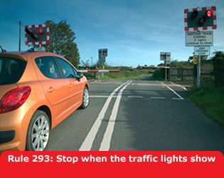

A level crossing is where a road crosses a railway or tramway line. Approach and cross it with care. Never drive onto a crossing until the road is clear on the other side and do not get too close to the car in front. Never stop or park on, or near, a crossing.
It is dangerous to touch overhead electric lines. You
MUST obey the safe height warning road signs and you
should not continue forward onto the railway if your vehicle touches
any height barrier or bells. The clearance available is usually 5
metres (16 feet 6 inches) but may be lower.
Laws RTA 1988 sect 36, TSRGD 2002 reg 17(5)
Controlled Crossings. Most crossings have traffic light signals with a steady amber light, twin flashing red stop lights (see ‘Light signals controlling traffic’ and ‘Traffic signs’) and an audible alarm for pedestrians. They may have full, half or no barriers.
Laws RTA 1988 sect 36 & TSRGD regs 10 & 40

Railway telephones. If you are driving a large or
slow- moving vehicle, a long, low vehicle with a risk of grounding,
or herding animals, a train could arrive before you are clear of the
crossing. You MUST obey any sign instructing you to
use the railway telephone to obtain permission to cross. You
MUST also telephone when clear of the crossing if
requested to do so.
Laws RTA 1988 sect 36 & TSRGD regs 10 &
16(1)
Crossings without traffic lights. Vehicles should stop and wait at the barrier or gate when it begins to close and not cross until the barrier or gate opens.
User-operated gates or barriers. Some crossings have ‘Stop’ signs and small red and green lights. You MUST NOT cross when the red light is showing, only cross if the green light is on. If crossing with a vehicle, you should:
Laws RTA 1988 sect 36 & TSRGD regs 10 & 52(2)
If there are no lights, follow the procedure in Rule 295. Stop, look both ways and listen before you cross. If there is a railway telephone, always use it to contact the signal operator to make sure it is safe to cross. Inform the signal operator again when you are clear of the crossing.
Open crossings. These have no gates, barriers, attendant or traffic lights but will have a ‘Give Way’ sign. You should look both ways, listen and make sure there is no train coming before you cross.
Incidents and breakdowns. If your vehicle breaks down, or if you have an incident on a crossing you should: